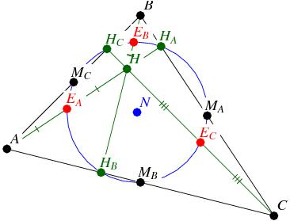

九點圓 (Nine point circle)
程式編寫日期: 2008年3月30日
已知三角形三頂點座標，程式會計算九點圓的九點，如下圖所以示，程式會順多顯示三角形三邊的中點MA、MB及MC，三高的垂足HA、HB及HC，和頂點至垂心三條線段的中點EA、EB及EC。

程式需要在 SD 模式下執行，因此在輸入程式前請先按 Mode Mode 1 進入SD模式。
注意: 藍色的英文字為統計模式中的變數(n 按 shift 1 3 ，Σx為平均x 按 shift 1 2)
程式 (287 bytes)
Stat clear: ?→A: ?→B: ?→C: ?→D: ?→X: ?→Y:
; Y - 1 DT: X DT: . 5(C + X◢ . 5(D + Y◢
. 5 (A + X◢ . 5(B + Y◢ . 5(A + C◢ . 5(B + D◢
Pol( C-X , D-Y: sinY (B - D) - cosY (C - A→X:
X cosY + C◢ X sinY + D◢
Pol( A-Σx , B-n: sinY (D - B) - cosY (A - C→X:
X cosY + A◢ X sinY + B◢
Pol( A-C, B-D: sinY (n - B) - cosY (A - Σx→X:
X cosY + A◢ X sinY + B◢ Y→M: Pol( A-Σx , B-n:
( sinM (n - D) - cosM (C - Σx) )÷sin (Y-M→X:
X sinY + C→M: D - X cosY→Y:
. 5(A + M◢ . 5(B + Y◢ . 5 (C + M◢
. 5(D + Y◢ . 5(Σx + M◢ . 5(n + Y
例題: A、B及C三點的坐標分別為(0 , 18)、(-6 , 0) 及 (12, 0)，求九點圓九點座標。
按 Prog 1 再按 0 EXE 18 EXE -6 EXE 0 EXE 12 EXE 0 EXE (顯示3) EXE (顯示 0，即MA=(3, 0))
EXE (顯示6) EXE (顯示 9，即MB=(6, 9))
EXE (顯示-3) EXE (顯示 9，即MC=(-3, 9))
EXE (顯示0) EXE (顯示 0，即HA=(0, 0))
EXE (顯示6.46154) EXE (顯示 8.30769，即HB=(6.46154, 8.30769))
EXE (顯示 - 4.2) EXE (顯示 5.4，即HC=(- 4.2, 5.4))
EXE (顯示0) EXE (顯示 11，即EA=(0, 11))
EXE (顯示 - 3) EXE (顯示 2，即EB=(- 3, 2))
EXE (顯示6) EXE (顯示 2，即EC=(6, 2))
參考資料:
http://en.wikipedia.org/wiki/Nine-point_circle
http://www.gogeometry.com/center/nine_point_center_euler.html